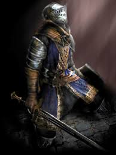
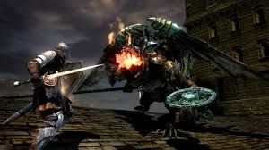
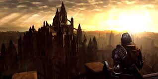
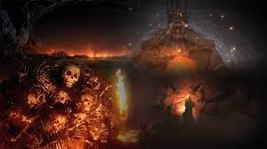
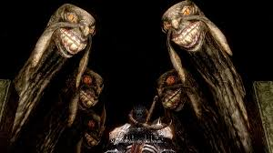

DARK SOULS
Dark Souls é uma aclamada série de jogos eletrônicos de RPG de ação e fantasia sombria, conhecida por seu alto nível de dificuldade e design de mundo complexo e interconectado. A franquia, desenvolvida pela FromSoftware e publicada pela Bandai Namco Entertainment, consolidou o subgênero "Soulslike".
Prncípio:
“Na era dos antepassados, o mundo era disforme, cercado por uma densa névoa. Uma terra de desfiladeiros cinzentos, árvores colossais e dragões perpétuos. Mas então surgiu fogo… e com o fogo vieram as divergências. Calor e frio, Vida e morte, e é claro… Luz e Trevas. Logo, ”eles” surgiram da escuridão, e encontraram a alma dos Lordes no interior do fogo. Nito, o patriarca dos mortos. A Bruxa de Izalith, e sua irmandade do Caos. Gwyn, o senhor do Sol, e seus leais cavaleiros. E o furtivo Pygmy, tão facilmente esquecido. Com o poder dos Lordes, eles desafiaram os dragões. A chuva de trovões de Gwyn partiram suas escamas de pedra. A irmandade do Caos lançou uma onda de tempestades de chamas. Nito liberou um miasma de morte e enfermidades. E Seath o Sem-escamas, traiu a sua própria espécie. Os dragões foram extintos. E então, começou a Era do Fogo. Mas logo as chamas vão se apagar, e apenas as Trevas irão restar. Até agora, só existem cinzas, e os homens não vêem luz, mas apenas noites inacabáveis. E entre os que restam vivos, se encontram os portadores do sinal obscuro.” “O Sinal obscuro significa um Morto-vivo amaldiçoado. Aqueles que o possuem são revividos após à morte, mas um dia vão perder a consciência e tornar-se um Hollow.”
Personagem:
O Jogador interpreta um morto-vivo que estava preso no Undead Asylum à espera da sua própria morte natural, onde iria sucumbir e tornar-se um Hollow, como tantos outros.Coincidentemente, um cavaleiro que te liberta da prisão e lhe fornece o Estus Flask, precisava de um substituto para a sua missão (de reacender as chamas primordiais e tirar o mundo da escuridão), pois como ele mesmo diz, não consegue mais prosseguir pois está fraco e logo irá morrer. O jogador então é levado para Lordran, a terra dos Lordes, e tem como objetivo principal suceder Gwyn e reacender o Bonfire primordial, para que as maldições sejam quebradas e o mundo possa ver luz novamente. Ou, utilizar do novo poder obtido para transformar-se no novo imperador do mundo podre e obscuro que Gwyn deixou-se criar.
Tutorial:
Para zerar Dark Souls, você precisa ser paciente, focar em explorar, usar um escudo 100% físico, aprender os ataques dos inimigos, focar em Vitalidade (HP) no início, e seguir uma ordem lógica para derrotar os chefes (ex: campanários, Undead Burg, Depths, Blighttown), sempre buscando os atalhos e usando itens como bombas e piromancias, e se concentrar nos objetivos principais, como acender os sinos e derrotar os Lordes, desbloqueando o final desejado
Início e os Dois Sinos:
O objetivo inicial é tocar dois sinos de despertar para abrir o portão da Fortaleza de Sen.
1-Refúgio dos Mortos-Vivos (Asylum). Tutorial obrigatório. Derrote o Asylum Demon.
2-Primeiro Sino Siga para Undead Burg e suba até a paróquia (Undead Parish). O chefe são as Gárgulas do Sino.
3-Segundo Sino: Desça para Blighttown (via The Depths ou atalho com a Master Key). Derrote Quelaag para tocar o sino nos domínios abaixo.
Fortaleza de Sen e Anor Londo:
1-Fortaleza de Sen: Supere as armadilhas e derrote o Iron Golem no topo para ser levado a Anor Londo.
2-Anor Londo: Enfrente Ornstein & Smough, um dos desafios mais icônicos. Após vencê-los, fale com Gwynevere para obter o Lordvessel. Este item permite o teletransporte entre fogueiras e abre as barreiras douradas no mundo.
As Quatro Almas de Lorde:
Com o Lordvessel, você deve coletar as almas dos quatro grandes seres para abrir o caminho ao chefe final:
1-Seath, o Sem Escamas: Localizado nos Arquivos do Duque (The Duke's Archives).
2-The Bed of Chaos: No final de Lost Izalith (após as Ruínas do Demônio).
3-Gravelord Nito: Nas profundezas da Tumba dos Gigantes (Tomb of the Giants).
4-Os Quatro Reis (Four Kings): Em New Londo Ruins. Nota: Você deve primeiro derrotar o lobo Sif no Jardim de Darkroot para obter o anel Covenant of Artorias, que permite sobreviver ao Abismo.
O Final:
Ofereça as almas no Altar do Fogo (Lordvessel) para abrir o portão para a Fornalha da Primeira Chama (Kiln of the First Flame). Lá, derrote Gwyn, Lord of Cinder, o chefe final.
Guia básico:
- 1-Início: Pegue o escudo e a maça, abra a porta do atalho e fale com o NPC para ganhar Estus.
- 2-Undead Burg & Parish Lute contra os inimigos, toque o primeiro sino. Cuidado com os Balder Knights.
- 3-The Depths & Capra Demon: Desça para as Profundezas (Depths), enfrente o Capra Demon (mate os cães primeiro, suba a escada).
- 4-Blighttown: Passe por essa área para tocar o segundo sino.
- 5-Anor Londo: Siga para Anor Londo, derrote os chefes lá para progredir.
- 6-DLC (Opcional): Se tiver, pegue a chave para a Painted World e, depois, vá para o Darkroot Basin para iniciar a DLC.
Objetivos finais:
- Derrote os Chefes Lordes (Bed of Chaos, Nito, Seath, Four Kings, Gwyn).
- Obtenha as almas dos Lordes para o Lordvessel.
- Lute contra Gwyn.
- Escolha entre os dois finais: "To Link the Fire" (acender a fogueira) ou "The Dark Lord" (seguir a escuridão).
Vídeo: